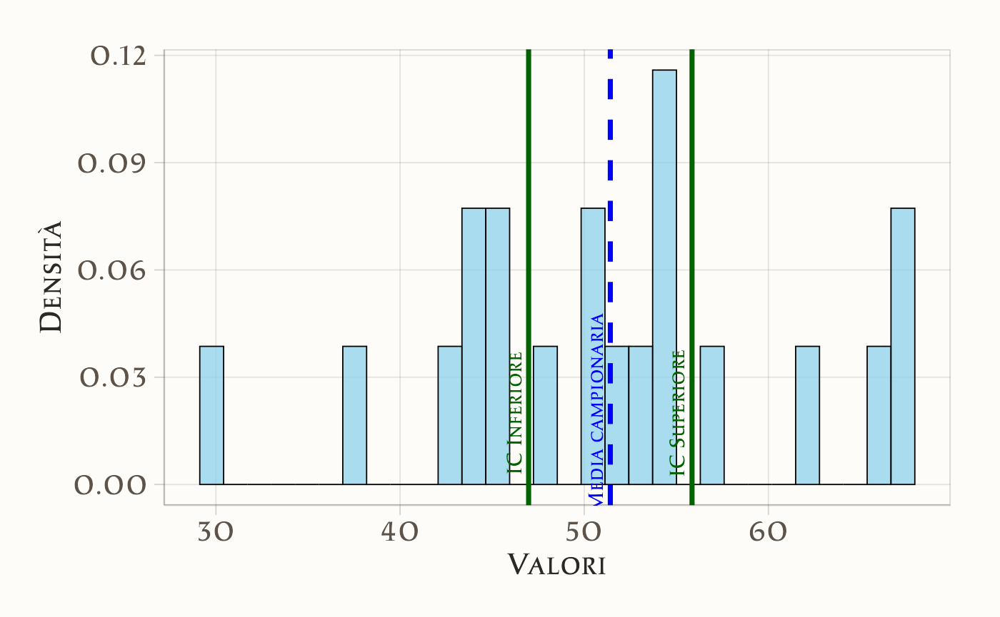

here::here("code", "_common.R") |>
source()
# Load packages
if (!requireNamespace("pacman")) install.packages("pacman")
pacman::p_load(cmdstanr, posterior, bayestestR)76 Intervalli di fiducia
In questo capitolo imparerai a
- sapere calcolare e interpretare gli intervalli di fiducia frequentisti.
Prerequisiti
- Leggere il capitolo Estimation, Confidence Intervals, and Bootstrapping di Statistical Inference via Data Science: A ModernDive into R and the Tidyverse (Second Edition).
- Leggere il capitolo Sampling Distributions of Estimators (Schervish & DeGroot, 2014).
Preparazione del Notebook
76.1 Introduzione
Gli intervalli di confidenza sono uno strumento fondamentale nell’inferenza statistica frequentista. Essi consentono di stimare un parametro sconosciuto di una popolazione, come la media \(\mu\), tenendo conto dell’incertezza derivante dal fatto che la stima si basa su un campione. Questo materiale didattico si propone di spiegare in modo dettagliato e chiaro la costruzione di un intervallo di confidenza per la media di una popolazione, sia nel caso di varianza nota sia in quello di varianza incognita.
76.2 Inferenza Statistica Frequentista e Media Campionaria
Quando estraiamo un campione casuale semplice \(X_1, X_2, \dots, X_n\) da una popolazione con media \(\mu\) e varianza \(\sigma^2\), la media campionaria \(\bar{X}\) è definita come:
\[ \bar{X} = \frac{1}{n} \sum_{i=1}^n X_i. \]
La media campionaria \(\bar{X}\) è una variabile casuale perché dipende dai valori osservati nel campione, che sono essi stessi casuali. Le proprietà della media campionaria sono le seguenti:
- Media della distribuzione campionaria: \(E[\bar{X}] = \mu\). La media campionaria è uno stimatore non distorto della media della popolazione.
- Varianza della distribuzione campionaria: \(\text{Var}(\bar{X}) = \frac{\sigma^2}{n}\). Questo significa che la precisione di \(\bar{X}\) come stima di \(\mu\) aumenta con il numero di osservazioni \(n\).
Queste proprietà sono fondamentali per calcolare un intervallo di confidenza, poiché ci permettono di descrivere la distribuzione di \(\bar{X}\).
76.3 Intervallo di Confidenza per la Media: Caso di Varianza Nota
Supponiamo che la popolazione sia distribuita normalmente con media \(\mu\) e varianza \(\sigma^2\), e che \(\sigma^2\) sia nota. La distribuzione della media campionaria \(\bar{X}\) è anch’essa normale:
\[ \bar{X} \sim \mathcal{N}\left(\mu, \frac{\sigma^2}{n}\right). \]
Passo 1: Standardizzazione della Media Campionaria.
Per lavorare con una distribuzione normale standard (media 0 e varianza 1), standardizziamo \(\bar{X}\) utilizzando la formula:
\[ Z = \frac{\bar{X} - \mu}{\sigma / \sqrt{n}}. \]
Qui, \(\sigma / \sqrt{n}\) è la deviazione standard della distribuzione campionaria di \(\bar{X}\).
Dopo questa trasformazione, la variabile \(Z\) segue una distribuzione normale standard:
\[ Z \sim \mathcal{N}(0, 1). \]
Passo 2: Determinazione del Livello di Confidenza.
Scegliamo un livello di confidenza \(\gamma\), ad esempio \(\gamma = 0.95\). Per una distribuzione normale standard, troviamo il valore critico \(z\) tale che la probabilità tra \(-z\) e \(+z\) sia pari al livello di confidenza:
\[ P(-z \leq Z \leq z) = \gamma. \]
Per un livello di confidenza del 95%, \(z \approx 1.96\).
Passo 3: Formulazione dell’Intervallo di Confidenza.
Partiamo dalla probabilità per \(Z\):
\[ P(-z \leq Z \leq z) = \gamma. \]
Sostituiamo la definizione di \(Z\):
\[ P\left(-z \leq \frac{\bar{X} - \mu}{\sigma / \sqrt{n}} \leq z\right) = \gamma. \]
Moltiplichiamo tutti i membri per \(\sigma / \sqrt{n}\) per rimuovere il denominatore:
\[ P\left(-z \cdot \frac{\sigma}{\sqrt{n}} \leq \bar{X} - \mu \leq z \cdot \frac{\sigma}{\sqrt{n}}\right) = \gamma. \]
Aggiungiamo \(\mu\) a tutti i membri per isolare \(\mu\):
\[ P\left(\bar{X} - z \cdot \frac{\sigma}{\sqrt{n}} \leq \mu \leq \bar{X} + z \cdot \frac{\sigma}{\sqrt{n}}\right) = \gamma. \]
Passo 4: Limiti dell’Intervallo di Confidenza.
Definiamo i limiti inferiore e superiore dell’intervallo di confidenza:
\[ \hat{a} = \bar{X} - z \cdot \frac{\sigma}{\sqrt{n}}, \quad \hat{b} = \bar{X} + z \cdot \frac{\sigma}{\sqrt{n}}. \]
L’intervallo di confidenza per \(\mu\) è quindi:
\[ (\hat{a}, \hat{b}) = \left(\bar{X} - z \cdot \frac{\sigma}{\sqrt{n}}, \bar{X} + z \cdot \frac{\sigma}{\sqrt{n}}\right). \]
76.4 Intervallo di Confidenza per la Media: Caso di Varianza Incognita
Nella maggior parte dei casi pratici, la varianza \(\sigma^2\) non è nota. In questi casi, stimiamo \(\sigma\) con la deviazione standard campionaria \(s\) e utilizziamo la distribuzione t di Student, che tiene conto dell’incertezza aggiuntiva.
Passo 1: Distribuzione t di Student.
La statistica che seguiamo è:
\[ T = \frac{\bar{X} - \mu}{s / \sqrt{n}}, \]
dove \(T\) segue una distribuzione t con \(n-1\) gradi di libertà.
Passo 2: Costruzione dell’Intervallo di Confidenza.
Analogamente al caso precedente, costruiamo l’intervallo partendo da:
\[ P(-t^\ast \leq T \leq t^\ast) = \gamma, \]
dove \(t^\ast\) è il valore critico della distribuzione t per il livello di confidenza \(\gamma\) e \(n-1\) gradi di libertà.
Sostituendo \(T\):
\[ P\left(-t^\ast \leq \frac{\bar{X} - \mu}{s / \sqrt{n}} \leq t^\ast\right) = \gamma. \]
Moltiplichiamo per \(s / \sqrt{n}\):
\[ P\left(-t^\ast \cdot \frac{s}{\sqrt{n}} \leq \bar{X} - \mu \leq t^\ast \cdot \frac{s}{\sqrt{n}}\right) = \gamma. \]
Aggiungiamo \(\mu\):
\[ P\left(\bar{X} - t^\ast \cdot \frac{s}{\sqrt{n}} \leq \mu \leq \bar{X} + t^\ast \cdot \frac{s}{\sqrt{n}}\right) = \gamma. \]
Passo 3: Limiti dell’Intervallo.
I limiti dell’intervallo sono:
\[ \hat{a} = \bar{X} - t^\ast \cdot \frac{s}{\sqrt{n}}, \quad \hat{b} = \bar{X} + t^\ast \cdot \frac{s}{\sqrt{n}}. \]
In conclusione, gli intervalli di confidenza forniscono un modo per quantificare l’incertezza nelle stime di parametri sconosciuti. La loro costruzione dipende dalla distribuzione campionaria dello stimatore e dall’informazione disponibile sulla varianza.
76.4.1 Applicabilità e Limitazioni
- Il metodo presuppone che la popolazione segua una distribuzione normale e è valido anche per campioni di piccole dimensioni (ad esempio, \(n < 30\)) prelevati da tale popolazione.
- Se la popolazione non è normalmente distribuita e la dimensione del campione è ridotta, questo metodo potrebbe non essere idoneo.
- Tuttavia, per campioni di grandi dimensioni (\(n \geq 30\)), questo approccio rimane valido per la stima dell’intervallo di confidenza grazie al teorema del limite centrale, che si applica anche a popolazioni con distribuzioni non normali.
76.5 Livello di Copertura
Per interpretare correttamente gli intervalli di fiducia è fondamentale considerare il concetto di “livello di copertura”. Questo livello indica la frequenza con cui l’intervallo di fiducia include il valore reale del parametro della popolazione, in una serie di esperimenti ripetuti.
Esempio di Livello di Copertura:
- Se il livello di copertura è del 95%, significa che, nel lungo periodo, il 95% degli intervalli di fiducia costruiti conterrà il valore vero del parametro.
- Importante: Questo non implica che ci sia una probabilità del 95% che il valore vero del parametro cada in un particolare intervallo di fiducia. Infatti, il parametro della popolazione è un valore fisso e non soggetto a probabilità; piuttosto, l’incertezza risiede nell’intervallo di fiducia stesso.
Come Funziona la Copertura:
- Nel contesto frequentista, la “probabilità” si riferisce alla frequenza a lungo termine di un certo evento in un gran numero di ripetizioni dell’esperimento.
- Nel caso degli intervalli di fiducia, l’“esperimento” è l’estrazione di un campione dalla popolazione, e l’“evento” è la generazione di un intervallo di fiducia che contiene il valore vero del parametro.
- Il livello di copertura, generalmente indicato come \(1-\alpha\), rappresenta la probabilità a lungo termine che intervalli di fiducia costruiti con questa metodologia includano il vero valore del parametro.
76.5.1 Simulazione
- Per illustrare questo concetto, eseguiamo una simulazione con la popolazione degli adulti maschi italiani, assunta come normalmente distribuita con media 175 cm e varianza 49 cm².
- Eseguiamo 1000 ripetizioni di un esperimento, estraendo ogni volta un campione di 30 individui.
- Per ciascun campione, calcoliamo l’intervallo di fiducia al 95% usando la formula:
\[ \bar{X} \pm t \frac{s}{\sqrt{n}}, \]
dove \(\bar{X}\) è la media campionaria, \(s\) è la deviazione standard campionaria e \(t\) è il valore critico della distribuzione t-Student per \(n-1\) gradi di libertà al livello di significatività \(\alpha/2 = 0.025\). - Registriamo i limiti di ciascun intervallo e controlliamo quanti di essi includono effettivamente il vero valore medio della popolazione.
Attraverso questa simulazione, possiamo visualizzare concretamente il concetto di livello di copertura e la sua importanza nella statistica frequentista.
In questa simulazione, genereremo 1000 campioni casuali di dimensione \(n = 30\) da una distribuzione normale con media \(\mu = 175\) e deviazione standard \(\sigma = 7\). Successivamente, calcoleremo gli intervalli di confidenza al 95% per ciascun campione e valuteremo il livello di copertura.
set.seed(123) # Per riproducibilità
# Parametri della distribuzione
mu <- 175
sigma <- 7
n <- 30
n_samples <- 1000
# Generazione dei campioni
samples <- replicate(n_samples, rnorm(n, mean = mu, sd = sigma))
dim(samples) # Verifica dimensioni: 30 righe per 1000 colonne
#> [1] 30 1000Il primo campione di ampiezza \(n = 30\) che abbiamo ottenuto è il seguente:
samples[, 1] # Primo campione
#> [1] 171.1 173.4 185.9 175.5 175.9 187.0 178.2 166.1 170.2 171.9 183.6 177.5
#> [13] 177.8 175.8 171.1 187.5 178.5 161.2 179.9 171.7 167.5 173.5 167.8 169.9
#> [25] 170.6 163.2 180.9 176.1 167.0 183.8Stampiamo le medie dei primi dieci campioni:
sample_means <- colMeans(samples) # Medie di tutti i campioni
sample_means[1:10] # Prime dieci medie
#> [1] 174.7 176.2 175.2 174.3 173.7 176.1 175.1 174.4 175.4 177.4Troviamo il valore critico della distribuzione \(t\) di Student con \(n - 1\) gradi di libertà e livello di confidenza del 95% (\(\alpha = 0.05\)):
alpha <- 0.05
t_critical <- qt(1 - alpha / 2, df = n - 1) # Valore critico
t_critical
#> [1] 2.045Utilizzando il valore critico \(t\), calcoliamo 1000 intervalli di confidenza per la media della popolazione:
# Calcolo della deviazione standard campionaria
sample_sds <- apply(samples, 2, sd)
# Ampiezza degli intervalli
interval_width <- t_critical * sample_sds / sqrt(n)
# Limiti degli intervalli di confidenza
CI_low <- sample_means - interval_width
CI_high <- sample_means + interval_widthTroviamo il livello di copertura, ovvero la proporzione di intervalli di confidenza che contengono il vero valore della media della popolazione \(\mu\):
coverage <- mean(CI_low < mu & mu < CI_high) # Proporzione di copertura
coverage
#> [1] 0.956In conclusione, ripetendo la simulazione per 1000 campioni, abbiamo ottenuto un livello di copertura molto vicino al valore nominale di \(1 - \alpha = 0.95\). Questo risultato dimostra che, con un campione di dimensione \(n = 30\), gli intervalli di confidenza al 95% calcolati utilizzando la distribuzione \(t\) di Student forniscono stime accurate della media della popolazione.
76.6 Il Concetto di Livello di Confidenza
Gli intervalli di confidenza sono range di valori che, con una certa sicurezza statistica, si ritiene includano il parametro di interesse.
Secondo l’approccio frequentista, l’intervallo di confidenza si deve considerare come una metodologia:
- Se ripetiamo l’esperimento (estrarre un campione e calcolare l’intervallo di confidenza) molte volte, il metodo produce un intervallo che coprirà il valore vero del parametro nel 95% dei casi, assumendo un livello di confidenza del 95%.
76.6.1 Un Malinteso Comune nell’Interpretazione degli Intervalli di Confidenza
È inesatto affermare che un determinato intervallo di confidenza contenga il valore vero di un parametro con una probabilità del 95%. Questo è un errore diffuso, persino tra i ricercatori, che spesso interpretano l’intervallo di confidenza come indicativo della probabilità che il parametro (ad esempio, la media della popolazione \(\mu\)) si trovi effettivamente all’interno di un dato intervallo (es. \([\hat{a}, \hat{b}]\)).
La descrizione corretta è la seguente:
- “La metodologia impiegata per calcolare l’intervallo \([\hat{a}, \hat{b}]\) ha il 95% di probabilità di generare un intervallo che include il vero valore del parametro”.
- Ciò significa che l’intervallo di confidenza non esprime una probabilità circa la posizione precisa del parametro, ma riflette la probabilità che la procedura adottata per determinarlo generi un intervallo che lo includa.
In conclusione, l’intervallo di confidenza ci fornisce una garanzia statistica riguardo alla affidabilità del metodo usato per la sua stima, piuttosto che sulla esatta ubicazione del parametro in questione.
76.6.2 Fraintendimenti Comuni sugli Intervalli di Confidenza
Nel loro lavoro, Hoekstra et al. (2014) evidenziano come, nonostante l’ampio riconoscimento dei limiti dei test di ipotesi nulle, gli intervalli di confidenza siano spesso consigliati per l’inferenza statistica. Anche l’American Psychological Association (APA) suggerisce che gli intervalli di confidenza siano “in generale, la migliore strategia di reportistica”. Tuttavia, Hoekstra et al. (2014) sottolineano che queste raccomandazioni non considerano la difficoltà nel fornire una corretta interpretazione degli intervalli di confidenza.
Per indagare l’interpretazione degli intervalli di confidenza, Hoekstra et al. (2014) hanno condotto uno studio con due domande principali:
- Quanto frequentemente intervalli di confidenza sono mal interpretati da studenti e ricercatori?
- L’esperienza nella ricerca riduce le interpretazioni errate degli intervalli di confidenza?
Prima di presentare lo studio, Hoekstra et al. (2014) ricordano qual è l’interpretazione corretta degli intervalli di confidenza.
A CI is a numerical interval constructed around the estimate of a parameter. Such an interval does not, however, directly indicate a property of the parameter; instead, it indicates a property of the procedure, as is typical for a frequentist technique. Specifically, we may find that a particular procedure, when used repeatedly across a series of hypothetical data sets (i.e., the sample space), yields intervals that contain the true parameter value in 95% of the cases. When such a procedure is applied to a particular data set, the resulting interval is said to be a 95% CI. The key point is that the CIs do not provide for a statement about the parameter as it relates to the particular sample at hand; instead, they provide for a statement about the performance of the procedure of drawing such intervals in repeated use. Hence, it is incorrect to interpret a CI as the probability that the true value is within the interval (e.g., Berger & Wolpert, 1988). As is the case with \(p\)-values, CIs do not allow one to make probability statements about parameters or hypotheses.
Nel loro studio, Hoekstra et al. (2014) hanno presentato un questionario a 596 partecipanti, tra cui studenti universitari e ricercatori, con le seguenti affermazioni riguardanti l’interpretazione degli intervalli di confidenza.
Professor Bumbledorf conducts an experiment, analyzes the data, and reports: “The 95% confidence interval for the mean ranges from 0.1 to 0.4.” Please mark each of the statements below as ‘true’ or ‘false’.
- The probability that the true mean is greater than 0 is at least 95%.
- The probability that the true mean equals 0 is smaller than 5%.
- The “null hypothesis” that the true mean equals 0 is likely to be incorrect.
- There is a 95% probability that the true mean lies between 0.1 and 0.4.
- We can be 95% confident that the true mean lies between 0.1 and 0.4.
- If we were to repeat the experiment over and over, then 95% of the time the true mean falls between 0.1 and 0.4.
Sorprendentemente, anche se tutte le sei affermazioni nel questionario sono errate, molti partecipanti hanno concordato con esse. I risultati mostrano che, in media, i partecipanti hanno concordato con circa 3.5 affermazioni errate su 6. Non è stata rilevata una differenza di rilievo nell’interpretazione degli intervalli di confidenza tra studenti e ricercatori, suggerendo che l’esperienza nella ricerca non migliora la comprensione di questo concetto.
I risultati indicano che molte persone interpretano erroneamente gli intervalli di confidenza, e che anche l’esperienza nella ricerca non garantisce una migliore comprensione. Questo solleva dubbi sull’efficacia degli intervalli di confidenza frequentisti e suggerisce che gli “intervalli di credibilità” bayesiani possano rappresentare un’alternativa più vantaggiosa. Quest’ultimi tendono ad essere più intuitivi e di più facile interpretazione corretta.
76.7 Confronto tra Intervalli Frequentisti e Bayesiani
Concludiamo questo capitolo esaminando le differenze tra l’intervallo di confidenza frequentista e l’intervallo di credibilità bayesiano, utilizzando lo stesso set di dati per entrambi i calcoli.
76.7.1 Intervallo di confidenza frequentista
Immaginiamo di avere un gruppo di 20 osservazioni relative alla performance in un test cognitivo. Il nostro obiettivo è stimare la media della popolazione da cui queste osservazioni sono tratte. Supponiamo che i dati provengano da una distribuzione normale con media \(\mu = 50\) e deviazione standard \(\sigma = 10\).
set.seed(123) # Per risultati riproducibili
# Parametri della popolazione
sample_size <- 20
mu <- 50
sigma <- 10
# Simulazione del campione
sample_data <- rnorm(sample_size, mean = mu, sd = sigma)
print(sample_data)
#> [1] 44.40 47.70 65.59 50.71 51.29 67.15 54.61 37.35 43.13 45.54 62.24 53.60
#> [13] 54.01 51.11 44.44 67.87 54.98 30.33 57.01 45.27Visualizziamo la distribuzione dei dati:
tibble(Valori = sample_data) |>
ggplot(aes(x = Valori)) +
geom_histogram(aes(y = after_stat(density)),
bins = 30, # Puoi regolare il numero di bin
fill = "skyblue",
color = "black",
alpha = 0.7
) +
labs(
title = "Distribuzione dei dati campionari",
x = "Valori",
y = "Densità"
)
La media campionaria (\(\hat{\mu}\)) viene calcolata come:
\[ \hat{\mu} = \frac{1}{n} \sum_{i=1}^n X_i \]
In R:
sample_mean <- mean(sample_data)
sample_mean
#> [1] 51.42La deviazione standard campionaria (\(s\)) si calcola come:
\[ s = \sqrt{\frac{\sum_{i=1}^n (X_i - \bar{X})^2}{n-1}} \]
In R:
variance <- function(x) {
sum((x - mean(x))^2) / length(x)
}
sample_sd <- sqrt(variance(sample_data)) # Deviazione standard campionaria
sample_sd
#> [1] 9.48L’errore standard della media (\(SE\)) è:
\[ SE = \frac{s}{\sqrt{n}} \]
In R:
standard_error <- sample_sd / sqrt(sample_size)
standard_error
#> [1] 2.12Un intervallo di confidenza è definito come:
\[ \bar{X} \pm t_{\text{critico}} \cdot SE \]
dove \(t_{\text{critico}}\) è il valore critico della distribuzione \(t\) di Student per un livello di confidenza del 95% (\(\alpha = 0.05\)) e \(n-1\) gradi di libertà. In R:
alpha <- 0.05
df <- sample_size - 1
t_critical <- qt(1 - alpha / 2, df)
t_critical
#> [1] 2.093Calcoliamo il margine di errore:
margin_of_error <- t_critical * standard_error
margin_of_error
#> [1] 4.437Calcoliamo i limiti inferiore e superiore dell’intervallo di confidenza:
confidence_interval <-
c(sample_mean - margin_of_error, sample_mean + margin_of_error)
confidence_interval
#> [1] 46.98 55.85Possiamo interpretare questo risultato dicendo che la procedura utilizzata per calcolare l’intervallo include il valore vero della media della popolazione nel 95% dei casi.
Creiamo un grafico per mostrare la distribuzione dei dati, la media campionaria e l’intervallo di confidenza:
tibble(Valori = sample_data) |>
ggplot(aes(x = Valori)) +
geom_histogram(aes(y = ..density..),
bins = 30, # Puoi regolare il numero di bin
fill = "skyblue",
color = "black",
alpha = 0.7
) +
# Linea per la media campionaria
geom_vline(aes(xintercept = sample_mean),
color = "blue",
linetype = "dashed",
linewidth = 1.2
) +
# Linee per l'intervallo di confidenza
geom_vline(aes(xintercept = confidence_interval[1]),
color = "darkgreen",
linewidth = 1.2
) +
geom_vline(aes(xintercept = confidence_interval[2]),
color = "darkgreen",
linewidth = 1.2
) +
# Titoli e assi
labs(
title = "Intervallo di Confidenza per la Media",
x = "Valori",
y = "Densità"
) +
# Legenda personalizzata
annotate("text",
x = sample_mean, y = 0.02, label = "Media campionaria",
color = "blue", angle = 90, vjust = -0.5
) +
annotate("text",
x = confidence_interval[1], y = 0.02, label = "IC Inferiore",
color = "darkgreen", angle = 90, vjust = -0.5
) +
annotate("text",
x = confidence_interval[2], y = 0.02, label = "IC Superiore",
color = "darkgreen", angle = 90, vjust = -0.5
)
76.7.1.1 Confronto tra gli Approcci Frequentista e Bayesiano
Intervallo di Credibilità Bayesiano:
- Rappresenta il grado di credenza (posteriori) che il parametro \(\mu\) si trovi all’interno dell’intervallo calcolato.
- Dipende sia dai dati osservati sia dalle distribuzioni a priori utilizzate nel modello, che possono influenzare il risultato in base alla loro specificità o vaghezza.
Intervallo di Confidenza Frequentista:
- Non esprime la probabilità che il parametro \(\mu\) appartenga a un determinato intervallo.
- Si riferisce invece alla procedura di costruzione dell’intervallo: se il campionamento fosse ripetuto infinite volte, il 95% degli intervalli costruiti conterrebbe il vero valore di \(\mu\).
In sintesi:
- L’intervallo di credibilità bayesiano fornisce una stima probabilistica diretta e interpretabile della posizione di \(\mu\), basata su dati osservati e informazioni a priori.
- L’intervallo di confidenza frequentista, invece, valuta la affidabilità della procedura nel lungo termine, senza fare affermazioni dirette sulla probabilità che il parametro rientri nell’intervallo specifico.
76.8 Riflessioni Conclusive
Come sottolineato da Hoekstra et al. (2014), è comune riscontrare fraintendimenti riguardo agli intervalli di fiducia. Il “livello di confidenza del 95%” è da interpretarsi come la probabilità a lungo termine che, in una serie di intervalli di fiducia calcolati, il 95% di essi includa il vero valore del parametro sconosciuto. Tuttavia, per un singolo intervallo di fiducia, non è possibile dichiarare con sicurezza che questo contenga effettivamente il parametro di interesse. In altre parole, la certezza sulla presenza del parametro sconosciuto all’interno di un dato intervallo di fiducia non è garantita per ogni singolo caso analizzato.
È inoltre inesatto presumere che esista un legame diretto tra la varianza e la media di un campione, ipotizzando che un intervallo di fiducia più ristretto implichi maggiore precisione. Nella prospettiva frequentista, la “precisione” è strettamente legata al livello di copertura a lungo termine assicurato dal metodo usato per creare gli intervalli di fiducia. Questo concetto non si applica al singolo intervallo di fiducia osservato. Dunque, un intervallo di fiducia che si presenta estremamente ristretto potrebbe in realtà essere significativamente lontano dal valore vero del parametro non noto.
È importante sottolineare che l’approccio frequentista offre un metodo per calcolare gli intervalli di confidenza per una vasta gamma di statistiche. Questo include, ad esempio, la stima dell’intervallo di confidenza per la differenza tra due medie, per una proporzione o per la differenza tra due proporzioni. Ecco le formule per calcolare gli intervalli di confidenza per i casi menzionati:
Intervallo di confidenza per la differenza tra due medie.
Se abbiamo due campioni indipendenti di dimensione \(n_1\) e \(n_2\), con medie \(\bar{x}_1\) e \(\bar{x}_2\) e deviazioni standard \(s_1\) e \(s_2\), l’intervallo di confidenza per la differenza tra le medie è calcolato come:
\[ (\bar{x}_1 - \bar{x}_2) \pm t_{\alpha/2} \sqrt{\frac{s_1^2}{n_1} + \frac{s_2^2}{n_2}}, \]
dove \(t_{\alpha/2}\) è il valore critico della distribuzione t di Student con \(\alpha/2\) di probabilità di coda e gradi di libertà \(df = n_1 + n_2 - 2\).
Intervallo di confidenza per una proporzione.
Per stimare l’intervallo di confidenza per una proporzione \(p\) in un campione binomiale di dimensione \(n\), la formula è:
\[ \hat{p} \pm z_{\alpha/2} \sqrt{\frac{\hat{p}(1 - \hat{p})}{n}}, \]
dove \(\hat{p}\) è la proporzione campionaria e \(z_{\alpha/2}\) è il valore critico della distribuzione normale standard con \(\alpha/2\) di probabilità di coda.
Intervallo di confidenza per la differenza tra due proporzioni.
Per stimare l’intervallo di confidenza per la differenza tra due proporzioni \(p_1\) e \(p_2\) in due campioni binomiali di dimensioni \(n_1\) e \(n_2\), la formula è:
\[ (\hat{p}_1 - \hat{p}_2) \pm z_{\alpha/2} \sqrt{\frac{\hat{p}_1(1 - \hat{p}_1)}{n_1} + \frac{\hat{p}_2(1 - \hat{p}_2)}{n_2}}, \]
dove \(\hat{p}_1\) e \(\hat{p}_2\) sono le proporzioni campionarie e \(z_{\alpha/2}\) è il valore critico della distribuzione normale standard con \(\alpha/2\) di probabilità di coda.
Esercizi
Problemi 1
Che cos’è un intervallo di confidenza dal punto di vista frequentista?
Che cosa significa la copertura al 95% di un intervallo di confidenza?
Perché non è corretto dire che “c’è il 95% di probabilità che il valore vero di \(\mu\) cada in questo intervallo di confidenza”?
In cosa consiste la differenza tra un intervallo di confidenza costruito con la distribuzione normale standard \(Z\) e uno costruito con la distribuzione \(t\) di Student?
Perché, nel caso di varianza incognita, si usa la deviazione standard campionaria \(s\) al posto di \(\sigma\)?
Come influenza la dimensione del campione \(n\) l’ampiezza dell’intervallo di confidenza?
Perché gli intervalli di confidenza frequentisti si basano su un concetto di “ripetizione dell’esperimento” nel lungo periodo?
Quali sono due fraintendimenti comuni sugli intervalli di confidenza?
Come si interpreta correttamente un intervallo di confidenza al 95%?
Qual è la differenza essenziale tra un intervallo di confidenza frequentista e un intervallo di credibilità bayesiano?
Soluzioni 1
- Che cos’è un intervallo di confidenza dal punto di vista frequentista?
Risposta
Un intervallo di confidenza (IC) è un range di valori costruito attorno a una stima campionaria (ad esempio, la media campionaria) che, secondo il metodo frequentista adottato, conterrà il valore vero del parametro in una certa proporzione di casi (ad esempio il 95%) se si ripetesse l’esperimento (ossia il campionamento) un numero molto grande di volte. Non esprime dunque la “probabilità” che il parametro sia dentro l’intervallo in un singolo caso, ma una frequenza di successo nel lungo periodo.
- Che cosa significa la copertura al 95% di un intervallo di confidenza?
Risposta
Il livello di copertura (ad esempio, 95%) indica che, in una serie ipotetica di infiniti campioni indipendenti e nel calcolo ripetuto di infiniti intervalli di confidenza secondo la stessa procedura, il 95% di tali intervalli conterrà il valore vero del parametro. È una proprietà della procedura di costruzione degli intervalli, non di un singolo intervallo già calcolato.
- Perché non è corretto dire che “c’è il 95% di probabilità che il valore vero di \(\mu\) cada in questo intervallo di confidenza”?
Risposta
Nella prospettiva frequentista, il parametro \(\mu\) è considerato un valore fisso (non una variabile casuale). L’incertezza risiede nel campione e nella procedura di costruzione dell’intervallo, non nel parametro. Di conseguenza, non si può associare una probabilità alla posizione di \(\mu\) all’interno di un singolo intervallo: l’intervallo o contiene \(\mu\) oppure no, senza mezze misure probabilistiche.
- In cosa consiste la differenza tra un intervallo di confidenza costruito con la distribuzione normale standard \(Z\) e uno costruito con la distribuzione \(t\) di Student?
Risposta
- Distribuzione \(Z\): si utilizza quando la varianza della popolazione \(\sigma^2\) è nota (o si approssima molto bene) e la popolazione è normalmente distribuita, o quando il campione è molto grande (per applicare il teorema del limite centrale).
- Distribuzione \(t\): si impiega quando la varianza \(\sigma^2\) non è nota e bisogna stimarla con la deviazione standard campionaria \(s\). La distribuzione \(t\) “corregge” per l’incertezza aggiuntiva dovuta alla stima di \(\sigma\) e diventa progressivamente simile alla normale standard quando il numero di gradi di libertà (cioè la dimensione del campione meno uno) è elevato.
- Perché, nel caso di varianza incognita, si usa la deviazione standard campionaria \(s\) al posto di \(\sigma\)?
Risposta
Quando \(\sigma\) non è nota, la si sostituisce con la stima campionaria \(s\). Poiché \(s\) è anch’essa una variabile casuale (cioè dipende dai dati osservati), introduce un’ulteriore fonte di incertezza. Questo giustifica l’uso della distribuzione \(t\) di Student anziché della normale standard, poiché \(t\) ingloba tale incertezza aggiuntiva.
- Come influenza la dimensione del campione \(n\) l’ampiezza dell’intervallo di confidenza?
Risposta
Aumentando \(n\), l’errore standard della media (cioè \(\frac{\sigma}{\sqrt{n}}\) oppure \(\frac{s}{\sqrt{n}}\)) diminuisce. Di conseguenza, l’intervallo di confidenza si restringe (a parità di livello di confidenza). In altre parole, con più dati a disposizione la stima della media è più “precisa” nel senso frequentista, e ciò si riflette in un IC più stretto.
- Perché gli intervalli di confidenza frequentisti si basano su un concetto di “ripetizione dell’esperimento” nel lungo periodo?
Risposta
La filosofia frequentista definisce la probabilità come una frequenza relativa di un evento dopo molteplici repliche dell’esperimento. Per gli intervalli di confidenza, ciò implica che la probabilità di copertura (ad esempio 95%) è intesa come la frequenza con cui, ripetendo infinite volte il campionamento e la costruzione di IC allo stesso modo, l’intervallo calcolato conterrà il vero parametro. Non riguarda invece la probabilità del parametro di trovarsi in un intervallo specifico.
- Quali sono due fraintendimenti comuni sugli intervalli di confidenza?
Risposta
1. Credere che l’IC fornisca una probabilità diretta di contenere il parametro (es. “c’è il 95% di probabilità che \(\mu\) sia qui dentro”) – in realtà, nel frequentismo \(\mu\) è fisso e l’IC varia.
2. Pensare che l’intervallo di confidenza sia significativo per la singola stima più che per la procedura – in realtà, il 95% di copertura si riferisce alla ripetizione dell’esperimento, non a un singolo intervallo.
- Come si interpreta correttamente un intervallo di confidenza al 95%?
Risposta
“Se ripetiamo più volte l’esperimento, ossia estraiamo molti campioni indipendenti dalla popolazione e costruiamo ogni volta un intervallo di confidenza con la stessa procedura, allora il 95% di quegli intervalli conterrà il valore vero della media \(\mu\).” È dunque una garanzia circa l’efficacia della metodologia nel lungo periodo.
- Qual è la differenza essenziale tra un intervallo di confidenza frequentista e un intervallo di credibilità bayesiano?
Risposta
- Intervallo di confidenza frequentista: descrive la performance a lungo termine di una procedura; non permette di affermare “la probabilità che \(\mu\) sia nell’intervallo è il 95%”.
- Intervallo di credibilità bayesiano: esprime direttamente una credenza probabilistica a posteriori sul parametro (ad esempio, “c’è il 95% di probabilità che \(\mu\) sia in questo intervallo”), perché il parametro è trattato come variabile casuale, con una distribuzione a priori che si aggiorna con i dati osservati.
Problemi 2
Di seguito trovi 10 esercizi incentrati sulla costruzione di intervalli di confidenza. I primi 5 richiedono di svolgere i calcoli “a mano” (carta e penna o calcolatrice), gli ultimi 5 prevedono l’utilizzo di R.
Esercizi da Risolvere “a Mano”
- Intervallo di Confidenza per la Media (Varianza Nota)
Una ricercatrice vuole stimare la media di un punteggio di reattività emotiva (scala 0–100) in giovani adulti. Dai dati precedenti, si sa che la varianza vera (della popolazione) è \(\sigma^2 = 16\). Si raccoglie un campione di \(n=25\) partecipanti e la media campionaria risulta \(\bar{X} = 45\).
1. Calcola l’intervallo di confidenza al 95% per la media della popolazione (\(\mu\)).
2. Fornisci un’interpretazione corretta (frequentista) del risultato.
- Intervallo di Confidenza per la Media (Varianza Incognita, 99%)
In un’indagine sulla soddisfazione lavorativa (scala da 1 a 7), vengono coinvolti \(n=10\) psicologi clinici. I dati raccolti forniscono:
- Media campionaria \(\bar{X} = 5{,}6\)
- Deviazione standard campionaria \(s=0{,}8\)
La popolazione è considerata approssimativamente normale ma la varianza è ignota. Calcola l’IC al 99% per la vera media di soddisfazione \(\mu\).
- Intervallo di Confidenza per la Differenza tra Due Medie (Varianze Incognite Uguali)
Un team di psicologi del lavoro vuole confrontare i livelli di stress (scala 0–50) tra due gruppi di dipendenti di un’azienda (Campione 1: reparto A, Campione 2: reparto B). I dati sono:
Reparto A (\(n_1=12\)):
\(\bar{X}_1 = 22\), \(s_1 = 4\)Reparto B (\(n_2=10\)):
\(\bar{X}_2 = 19\), \(s_2 = 3{,}5\)
Assumi che le due popolazioni siano normali con varianze ignote ma uguali e calcola l’intervallo di confidenza al 95% per \(\mu_A - \mu_B\). (Usa quindi la formula con la varianza pooled.)
- Intervallo di Confidenza per una Proporzione
Uno studio pilota su un programma di training per la gestione dell’ansia vede 120 persone iscriversi. Alla fine del programma, 48 di loro riportano di aver diminuito la frequenza di attacchi di panico in modo “significativo”.
1. Stima la proporzione campionaria \(\hat{p}\).
2. Calcola l’IC al 95% per la vera proporzione \(p\) di persone che trarrebbe beneficio “significativo” dal programma.
- Intervallo di Confidenza per la Differenza tra Due Proporzioni
In un esperimento, due gruppi di partecipanti ricevono diversi percorsi di psicoterapia per ridurre l’insonnia:
- Gruppo 1 (\(n_1=50\)): 35 persone riportano un netto miglioramento del sonno.
- Gruppo 2 (\(n_2=40\)): 20 persone riportano un netto miglioramento del sonno.
Si vuole stimare la differenza \((p_1 - p_2)\) nelle proporzioni di successo dei due trattamenti. Calcola l’IC al 95%.
Esercizi da Risolvere con R
Nei prossimi esercizi, utilizza R per effettuare i calcoli. I dati sono già contestualizzati in ambito psicologico.
- Intervallo di Confidenza per la Media (Varianza Incognita)
Hai misurato i tempi di reazione (in millisecondi) a uno stimolo di pericolo in un gruppo di 15 partecipanti. I dati (approssimati) sono:
reaction_times <- c(220, 250, 210, 240, 260, 270, 225, 255, 235, 245, 210, 270, 265, 220, 230)- Utilizza R per calcolare la media e la deviazione standard campionaria.
- Costruisci (tramite
t.test(reaction_times)) l’intervallo di confidenza al 95% per il tempo di reazione medio della popolazione.
- Intervallo di Confidenza per la Differenza tra Due Medie (Varianze Incognite)
Due gruppi di studenti hanno svolto un test di memoria verbale dopo aver seguito differenti strategie di studio:
groupA <- c(15, 12, 18, 10, 14, 16, 19, 11)
groupB <- c(10, 9, 14, 11, 8, 12, 13, 15)- Calcola in R le medie campionarie dei due gruppi.
- Utilizza
t.test(groupA, groupB, var.equal = FALSE)per ottenere l’IC al 95% della differenza \(\mu_A - \mu_B\).
- Riporta i risultati numerici.
- Intervallo di Confidenza per una Proporzione (Studio su Fobia Specifica)
In un piccolo studio, hai i dati (binari: 1 = “attacco d’ansia”, 0 = “nessun attacco”) raccolti da 20 persone esposte a uno stimolo fobico:
attacks <- c(1,0,0,1,1,1,1,0,0,1,0,1,1,1,1,0,0,1,0,1)- Calcola in R la proporzione campionaria di attacchi d’ansia.
- Utilizza
prop.test()per costruire l’IC al 95% per la proporzione vera di attacchi d’ansia in questa specifica situazione.
- Intervallo di Confidenza per la Differenza tra Due Proporzioni (Test A/B di un Training Psicologico)
Due versioni di un training psicologico anti-stress (A e B) sono state testate su studenti universitari, registrando (binario: 1/0) se al termine del corso mostrano ridotti livelli di stress:
versionA <- c(1,1,0,1,1,0,1,0,1,1,0,1)
versionB <- c(0,0,1,1,1,0,1,0,0,1,0,0)- Calcola in R \(\hat{p}_A\) e \(\hat{p}_B\).
- Usa
prop.test(x = ..., n = ...)per l’IC al 95% di \((p_A - p_B)\).
- Riporta i risultati.
- Simulazione di Copertura per l’IC sulla Media (Contesto Psicologico)
Scrivi (o completa) uno script in R che simuli 1000 campioni di punteggi di ansia (scala 0–80) estratti da una distribuzione approssimata come Normale, con media vera \(\mu=40\) e \(\sigma=10\). Per ogni campione di ampiezza \(n=25\):
- Calcola la media campionaria e la deviazione standard.
- Costruisci l’IC al 95% (usando la distribuzione t).
- Verifica quante volte l’intervallo contiene il vero valore \(\mu = 40\).
- Stima la proporzione di copertura e commenta se è prossima a 0,95.
Esempio di traccia:
set.seed(123)
n_sims <- 1000
n <- 25
mu <- 40
sigma <- 10
count_included <- 0
for(i in 1:n_sims){
sample_data <- rnorm(n, mean = mu, sd = sigma)
# calcola media, sd, IC, verifica se 40 è dentro l’IC
}
coverage <- count_included / n_sims
coverage
Soluzioni 2
Soluzioni Esercizi “a Mano”
Soluzione 1
- Dati: \(\sigma^2=16 \implies \sigma=4\); \(n=25\); \(\bar{X}=45\); livello di confidenza 95% (\(\alpha=0{,}05\)).
- Errore standard:
\[ \text{SE} = \frac{\sigma}{\sqrt{n}} = \frac{4}{5} = 0{,}8. \]
- Valore critico \(z_{\alpha/2}\approx 1{,}96\).
- Margine di errore:
\[ E = z_{\alpha/2} \times \text{SE} \approx 1{,}96 \times 0{,}8 = 1{,}57. \]
- IC 95%:
\[ 45 \pm 1{,}57 \quad \Rightarrow \quad (43{,}43;\, 46{,}57). \]
Soluzione 2
- Dati: \(n=10\), \(\bar{X}=5{,}6\), \(s=0{,}8\), confidenza 99% (\(\alpha=0{,}01\)).
- Gradi di libertà \(df = 9\). Il valore di \(t_{\alpha/2, df=9}\) (per \(\alpha/2=0{,}005\)) è approssimativamente 3,25 (dipende dalla tabella).
- Errore standard:
\[ \text{SE} = \frac{s}{\sqrt{n}} = \frac{0{,}8}{\sqrt{10}} \approx \frac{0{,}8}{3{,}162} \approx 0{,}253. \]
- Margine di errore:
\[ E = 3{,}25 \times 0{,}253 \approx 0{,}82. \]
- IC al 99%:
\[ 5{,}6 \pm 0{,}82 \quad \Rightarrow \quad (4{,}78;\, 6{,}42). \]
Soluzione 3
- Dati:
- Campione 1 (A): \(n_1=12\), \(\bar{X}_1=22\), \(s_1=4\).
- Campione 2 (B): \(n_2=10\), \(\bar{X}_2=19\), \(s_2=3{,}5\).
- IC 95% \(\Rightarrow \alpha=0{,}05\).
- Si assume varianza uguale (\(\sigma_A^2 = \sigma_B^2\)) \(\Rightarrow\) varianza pooled.
- Campione 1 (A): \(n_1=12\), \(\bar{X}_1=22\), \(s_1=4\).
- Varianza campionaria: \(s_1^2=16\), \(s_2^2=12{,}25\).
- Varianza pooled:
\[ s_p^2 = \frac{(n_1 - 1)s_1^2 + (n_2 - 1)s_2^2}{n_1 + n_2 - 2} = \frac{(11 \times 16) + (9 \times 12{,}25)}{12 + 10 - 2}. \] \[ = \frac{176 + 110{,}25}{20} = \frac{286{,}25}{20} = 14{,}3125. \] \[ s_p = \sqrt{14{,}3125} \approx 3{,}785. \] - Errore standard della differenza:
\[ \text{SE}(\bar{X}_1 - \bar{X}_2) = \sqrt{\,s_p^2\!\left(\tfrac{1}{n_1} + \tfrac{1}{n_2}\right)} = \sqrt{\,14{,}3125 \times \left(\tfrac{1}{12} + \tfrac{1}{10}\right)}. \] \[ \tfrac{1}{12} + \tfrac{1}{10} = 0{,}0833 + 0{,}1 = 0{,}1833. \] \[ 14{,}3125 \times 0{,}1833 \approx 2{,}624 \quad \Rightarrow \quad \sqrt{2{,}624} \approx 1{,}62. \] - Differenza campionaria: \(\bar{X}_1 - \bar{X}_2 = 3\).
- Valore critico \(t_{\alpha/2}\) con \(df = n_1 + n_2 - 2 = 20\): circa 2,086.
- Margine di errore: \(E \approx 2{,}086 \times 1{,}62 \approx 3{,}38\).
- IC 95%:
\[ 3 \pm 3{,}38 \quad \Rightarrow \quad (-0{,}38;\, 6{,}38). \] (Approssimando: i valori variano un po’ in base agli arrotondamenti.)
Soluzione 4
- Dati: \(n=120\), successo \(x=48\).
- \(\hat{p} = \frac{48}{120}=0{,}4\).
- Errore standard (approssimazione normale):
\[ \sqrt{\frac{\hat{p}(1-\hat{p})}{n}} = \sqrt{\frac{0{,}4 \times 0{,}6}{120}} = \sqrt{\frac{0{,}24}{120}} = \sqrt{0{,}002} \approx 0{,}0447. \] - Con \(\alpha=0{,}05\), \(z_{\alpha/2} \approx 1{,}96\).
- Margine di errore:
\[ E = 1{,}96 \times 0{,}0447 \approx 0{,}0876. \] - IC 95%:
\[ 0{,}4 \pm 0{,}0876 \quad \Rightarrow \quad (0{,}3124;\, 0{,}4876). \]
Soluzione 5
- Dati:
- Gruppo 1 (\(n_1=50\)): 35 successi \(\Rightarrow \hat{p}_1=35/50=0{,}70\).
- Gruppo 2 (\(n_2=40\)): 20 successi \(\Rightarrow \hat{p}_2=20/40=0{,}50\).
- Gruppo 1 (\(n_1=50\)): 35 successi \(\Rightarrow \hat{p}_1=35/50=0{,}70\).
- Differenza: \(\hat{p}_1 - \hat{p}_2=0{,}20\).
- Errore standard:
\[ \sqrt{\frac{0{,}70 \cdot 0{,}30}{50} + \frac{0{,}50 \cdot 0{,}50}{40}} = \sqrt{\frac{0{,}21}{50} + \frac{0{,}25}{40}} = \sqrt{0{,}0042 + 0{,}00625} = \sqrt{0{,}01045} \approx 0{,}1022. \] - Margine di errore (al 95%, \(z_{\alpha/2}=1{,}96\)):
\[ 1{,}96 \times 0{,}1022 \approx 0{,}200. \] - IC 95%:
\[ 0{,}20 \pm 0{,}20 \quad \Rightarrow \quad (0{,}00;\, 0{,}40). \] *(Può capitare un limite inferiore esattamente 0, se si arrotonda.)
Soluzioni Esercizi con R
(I risultati possono variare leggermente a seconda della versione di R e di eventuali correzioni di continuità nelle funzioni di test.)
Soluzione 6
reaction_times <- c(220, 250, 210, 240, 260, 270, 225, 255, 235, 245, 210, 270, 265, 220, 230)
mean(reaction_times) # media
sd(reaction_times) # deviazione standard
t.test(reaction_times) # t.test con conf.level = 0.95 di default- Esempio di risultato:
- Media campionaria \(\bar{X}\approx 240\) (dipende dai dati esatti)
t.test()riporta un IC 95% (ad es.): \((230, 250)\) [numeri a titolo di esempio].
- Media campionaria \(\bar{X}\approx 240\) (dipende dai dati esatti)
Soluzione 7
groupA <- c(15, 12, 18, 10, 14, 16, 19, 11)
groupB <- c(10, 9, 14, 11, 8, 12, 13, 15)
mean(groupA) # ~ 14.375
mean(groupB) # ~ 11.50
t.test(groupA, groupB, var.equal = FALSE)Esempio di output (fittizio):
Welch Two Sample t-test data: groupA and groupB t = 2.35, df = 13.7, p-value = 0.033 95 percent confidence interval: 0.47 5.77 sample estimates: mean of x mean of y 14.375 11.500Quindi l’IC 95% per \(\mu_A - \mu_B\) potrebbe essere circa \((0{,}47;\, 5{,}77)\).
Soluzione 8
attacks <- c(1,0,0,1,1,1,1,0,0,1,0,1,1,1,1,0,0,1,0,1)
sum(attacks) # conta quanti "1"
length(attacks) # 20
prop.test(sum(attacks), length(attacks), conf.level = 0.95)- Se, ad esempio, vi fossero 12 “1” su 20, \(\hat{p}=0{,}60\).
- L’intervallo di confidenza al 95% (a seconda della continuity correction) potrebbe essere indicativamente \((0{,}36;\, 0{,}80)\).
Soluzione 9
versionA <- c(1,1,0,1,1,0,1,0,1,1,0,1)
versionB <- c(0,0,1,1,1,0,1,0,0,1,0,0)
sumA <- sum(versionA)
sumB <- sum(versionB)
nA <- length(versionA)
nB <- length(versionB)
prop.test(c(sumA,sumB), c(nA,nB), conf.level = 0.95)- Esempio:
sum(versionA)= 8 successi su 12 (\(\hat{p}_A=0{,}666...\))
sum(versionB)= 5 successi su 12 (\(\hat{p}_B=0{,}416...\))
- L’IC per \(\hat{p}_A - \hat{p}_B\) potrebbe essere, ad esempio, \((-0{,}05;\, 0{,}61)\).
(I numeri esatti variano a seconda dell’eventuale correzione di continuità.)
Soluzione 10
Un possibile script:
set.seed(123)
n_sims <- 1000
n <- 25
mu <- 40
sigma <- 10
count_included <- 0
for(i in 1:n_sims){
sample_data <- rnorm(n, mean = mu, sd = sigma)
xbar <- mean(sample_data)
s <- sd(sample_data)
# t critico
t_crit <- qt(0.975, df = n - 1)
# IC
se <- s / sqrt(n)
E <- t_crit * se
lower <- xbar - E
upper <- xbar + E
if(mu >= lower & mu <= upper){
count_included <- count_included + 1
}
}
coverage <- count_included / n_sims
coverageEsempio di risultato:
> coverage [1] 0.948Ovvero ~94,8% degli IC contengono il vero valore \(\mu=40\), in linea con il 95% atteso (piccole differenze dovute al caso).
Commento Conclusivo
In ogni caso, ricorda sempre che l’interpretazione frequentista di un intervallo di confidenza si basa sulla “copertura a lungo termine” del metodo di costruzione dell’IC, non sulla probabilità che il vero parametro cada nell’intervallo specifico appena calcolato.
Problemi 3
Esercizio 1 – Calcolo e interpretazione dell’IC frequentista per la media
- Calcola la media campionaria \(\bar{X}\) e la deviazione standard campionaria \(s\).
- Assumendo che il punteggio SWLS nella popolazione di riferimento (ad esempio, “giovani adulti universitari”) sia approssimativamente normale ma con varianza sconosciuta, costruisci l’intervallo di confidenza al 95% per la media \(\mu\) utilizzando la distribuzione \(t\) di Student con \(n - 1\) gradi di libertà (dove \(n=10\)).
- Interpreta questo intervallo di confidenza in ottica frequentista. Metti in evidenza la distinzione fra l’“interpretazione corretta” (copertura sul lungo periodo) e l’“interpretazione scorretta” (credere che ci sia il 95% di probabilità che \(\mu\) stia nell’intervallo calcolato).
Spunti di riflessione sui limiti:
- Con un campione molto piccolo, l’intervallo di confidenza potrebbe essere molto ampio.
- Se la popolazione non fosse davvero normale, la validità dell’IC con distribuzione \(t\) potrebbe essere compromessa.
- In ottica frequentista, il singolo intervallo o contiene il vero valore di \(\mu\) o non lo contiene: la “probabilità 95%” si riferisce alla procedura di costruzione, non a questo singolo intervallo specifico.
Esercizio 2 – Sensibilità dell’IC a diversi livelli di confidenza
- Utilizzando gli stessi 10 dati, calcola:
- l’intervallo di confidenza all’80%
- l’intervallo di confidenza al 99%
- l’intervallo di confidenza all’80%
- Confronta l’ampiezza dei tre intervalli (80%, 95%, 99%).
- Commenta dal punto di vista dell’interpretazione frequentista: perché l’IC al 99% è più ampio di quello al 95%, e quest’ultimo è più ampio di quello all’80%?
Spunti di riflessione sui limiti:
- Aumentare il livello di confidenza fa sì che l’IC si allarghi, spesso di molto se \(n\) è piccolo.
- Un IC più ampio rassicura sulla “copertura” nel lungo periodo, ma è meno informativo per il singolo studio.
Esercizio 3 – Utilizzo di software per il calcolo (ad esempio, R o altro)
Inserisci i dati in un software (come R). Puoi farlo in R con:
swls_data <- c(28, 22, 26, 18, 30, 24, 27, 17, 21, 25)Calcola la media e la deviazione standard in R, poi utilizza la funzione
t.test():t.test(swls_data, conf.level = 0.95)Riporta l’intervallo di confidenza ottenuto e confrontalo con quello calcolato a mano.
Commenta eventuali differenze (minime) dovute agli arrotondamenti o a correzioni interne di R.
Ribadisci la corretta interpretazione frequentista: se si ripetesse lo stesso studio molte volte (stessa dimensione campionaria, stesso contesto di popolazione, stessa procedura di calcolo), il 95% di questi IC conterrebbe il valore vero di \(\mu\).
Esercizio 4 – Confronto pratico e riflessioni critiche
- Immagina di avere un’ipotesi: “La media SWLS nella popolazione dei giovani adulti universitari è pari a 24” (un’ipotesi plausibile se la scala totale va da 5 a 35).
- Osserva l’IC al 95% che hai calcolato: contiene il valore 24?
- Se l’IC contiene 24, puoi dire che il valore “24” è “molto probabile”? (No, attenzione! Vedi interpretazione corretta vs. errata.)
- Se l’IC non contiene 24, puoi concludere che la media reale è “sicuramente” diversa da 24? (No, perché hai solo un campione piccolo e il concetto di significatività vs. copertura può essere fuorviante.)
Spunti di riflessione sui limiti:
- Il “livello di fiducia” dell’IC non è una “probabilità” che \(\mu\) sia all’interno di un singolo intervallo: è una proprietà della procedura sul lungo periodo.
- Con pochi dati, le assunzioni (come la normalità) e la variabilità casuale giocano un ruolo enorme: l’intervallo può risultare poco stabile e molto sensibile a pochi valori estremi.
- L’IC non dice “quanto è plausibile 24” (questo sarebbe più vicino a un approccio bayesiano, che definisce un intervallo di credibilità). L’IC frequentista dice soltanto che, ripetendo molte volte la stessa procedura, nel 95% dei casi il vero \(\mu\) cadrà entro l’intervallo calcolato in ciascuna ripetizione.
Soluzioni 3
Supponiamo siano stati raccolti i dati seguenti (sostituisci con i dati effettivi):
28, 22, 26, 18, 30, 24, 27, 17, 21, 25Esercizio 1
- Calcolo di media e deviazione standard campionaria
Indichiamo i punteggi come \(X_1, X_2, \dots, X_{10}\). La media campionaria è:
\[ \bar{X} = \frac{1}{n}\sum_{i=1}^n X_i. \]
Facendo la somma \(28 + 22 + 26 + 18 + 30 + 24 + 27 + 17 + 21 + 25 = 238\).
Quindi, con \(n=10\), otteniamo:
\[ \bar{X} = \frac{238}{10} = 23.8. \]
Per la deviazione standard campionaria \(s\), si utilizza:
\[ s = \sqrt{\frac{1}{n-1} \sum_{i=1}^n \bigl(X_i - \bar{X}\bigr)^2}. \]
Calcolando (o usando un foglio di calcolo / software), si ricava approssimativamente:
\[ s \approx 4.26. \]
- Costruzione dell’Intervallo di Confidenza al 95%
Poiché la varianza è sconosciuta e il campione è piccolo, usiamo la distribuzione \(t\) di Student con \(n-1 = 9\) gradi di libertà.
- Livello di confidenza: \(95\%\).
- \(\alpha = 0,05\), quindi \(\alpha/2 = 0,025\).
- Il valore critico \(t_{\alpha/2,df=9}\) è circa 2,262 (da tavole o software).
- Errore standard
\[ \text{SE} = \frac{s}{\sqrt{n}} = \frac{4.26}{\sqrt{10}} \approx 4.26 / 3.162 \approx 1.35. \]
- Margine di errore
\[ E = t_{\alpha/2} \times \text{SE} \approx 2.262 \times 1.35 \approx 3.05. \]
- Intervallo di confidenza
\[ \bar{X} \pm E \quad \Rightarrow \quad 23.8 \pm 3.05 \quad \Rightarrow \quad (20.75;\, 26.85). \]
- Interpretazione frequentista corretta
- Interpretazione corretta: se ripetessimo lo stesso tipo di studio molte volte (stessa procedura di campionamento, stesse dimensioni, stesso metodo di calcolo dell’IC), il 95% di questi intervalli conterrà il vero valore della media della popolazione (\(\mu\)).
- Interpretazione scorretta (da evitare): “C’è il 95% di probabilità che la vera media sia qui dentro”. Nel frequentismo, \(\mu\) è considerato un valore fisso e non aleatorio. L’incertezza riguarda l’intervallo, non il parametro.
Limite: con poche osservazioni (n=10), l’intervallo può risultare piuttosto ampio. Inoltre, l’assunzione di normalità della popolazione di partenza potrebbe non essere pienamente soddisfatta.
Esercizio 2
- Calcolo di due nuovi IC: 80% e 99%
Utilizziamo gli stessi \(\bar{X} = 23.8\), \(s = 4.26\), \(n=10\). Cambia solo il valore critico \(t\).
- IC all’80% (\(\alpha=0,20\), \(\alpha/2 = 0,10\)):
- \(t_{0,10,df=9} \approx 1.383\)
- \(\text{SE} \approx 1.35\) (come prima)
- Margine di errore \(E = 1.383 \times 1.35 \approx 1.87\)
- IC 80%: \((23.8 \pm 1.87)\) \(\Rightarrow\) \((21.93;\, 25.67)\).
- \(t_{0,10,df=9} \approx 1.383\)
- IC al 99% (\(\alpha=0,01\), \(\alpha/2 = 0,005\)):
- \(t_{0,005,df=9} \approx 3.25\)
- \(\text{SE} \approx 1.35\)
- Margine di errore \(E = 3.25 \times 1.35 \approx 4.39\)
- IC 99%: \((23.8 \pm 4.39)\) \(\Rightarrow\) \((19.41;\, 28.19)\).
- \(t_{0,005,df=9} \approx 3.25\)
- Confronto delle ampiezze
- 80%: \((21.93;\, 25.67)\) (più stretto)
- 95%: \((20.75;\, 26.85)\) (intermedio)
- 99%: \((19.41;\, 28.19)\) (più largo)
Aumentando il livello di confidenza, l’intervallo si espande. Per “coprire” il valore vero nel 99% delle volte, occorre un intervallo più ampio.
Esercizio 3
- Calcolo in R
Se in R inseriamo i dati:
swls_data <- c(28, 22, 26, 18, 30, 24, 27, 17, 21, 25)
mean(swls_data) # ~ 23.8
sd(swls_data) # ~ 4.26
t.test(swls_data, conf.level = 0.95)- Confronto con il calcolo “a mano”
La funzione t.test() (di default) eseguirà un One Sample t-test con confidenza 95%. Restituisce:
- Un IC molto simile a \((20.75;\, 26.85)\), con possibili piccole differenze di arrotondamento.
- Ribadire l’interpretazione
- Il risultato di
t.test()potrebbe riportare:
95 percent confidence interval: (20.72, 26.88)
(o valori simili).
- Anche qui vale la regola: non è una probabilità che \(\mu\) sia dentro, bensì una proprietà della procedura (lungo periodo).
Esercizio 4
- Ipotesi: “La media SWLS reale nella popolazione è 24”.
- Verifica se 24 è dentro l’IC al 95%. Dall’IC \((20.75;\, 26.85)\), notiamo che 24 rientra in questo intervallo.
- Significa che è “probabile” 24?
- Attenzione: l’IC frequentista non fornisce una probabilità su questo specifico valore. Dire che “24 è dentro l’intervallo” non equivale a dire “la probabilità che \(\mu\) = 24 è 95%”.
- Attenzione: l’IC frequentista non fornisce una probabilità su questo specifico valore. Dire che “24 è dentro l’intervallo” non equivale a dire “la probabilità che \(\mu\) = 24 è 95%”.
- Se 24 fosse stato fuori dall’intervallo, non potremmo comunque affermare con certezza che \(\mu\neq 24\). Ricordiamo sempre che, con un campione così piccolo, l’incertezza è alta e l’IC si basa su assunzioni (normalità e stima corretta).
Limiti dell’interpretazione
- Con campioni ridotti, basta poco (un outlier o una leggera deviazione dalla normalità) per alterare significativamente l’intervallo.
- Il livello di confidenza (ad es. 95%) è una proprietà della procedura: in una serie di infiniti studi simili, il 95% di quegli intervalli conterrebbe \(\mu\). Non significa che, dato questo singolo intervallo, ci sia una “probabilità 95%” di includere il parametro.
Riepilogo Finale
- Valori Numerici:
- Media \(\bar{X} = 23.8\); dev. standard \(s \approx 4.26\).
- IC 95% (a mano) \(\approx (20.75;\, 26.85)\).
- IC 80% \(\approx (21.93;\, 25.67)\); IC 99% \(\approx (19.41;\, 28.19)\).
- Media \(\bar{X} = 23.8\); dev. standard \(s \approx 4.26\).
- Interpretazione Frequentista:
> Nel lungo periodo, il 95% (o 99%, 80%, ecc.) degli intervalli calcolati con la stessa procedura conterrà il vero valore di \(\mu\).
- Limiti (campioni piccoli, ipotesi di normalità, differenza tra “copertura ripetuta” e “probabilità che \(\mu\) sia in un singolo IC”).
In questo modo, gli studenti vedono sia la parte di calcolo (formule, tabelle/valori critici, software) sia gli aspetti interpretativi (come evitare i fraintendimenti più comuni sul significato dell’IC frequentista).
Conclusioni generali
- Con un campione così piccolo (n=10), l’intervallo di confidenza può essere largo e sensibile a qualsiasi deviazione dall’assunzione di normalità.
- L’interpretazione frequentista si focalizza sulla “procedura” e sul “lungo periodo” (ripetizione dell’esperimento), non sulla probabilità che \(\mu\) sia dentro questo intervallo specifico.
- È facile incorrere in fraintendimenti (“c’è il 95% di probabilità che la vera media sia qui dentro?”), occorre ribadire che la probabilità secondo il frequentismo riguarda il campionamento e la costruzione dell’intervallo, non la posizione fissa del parametro.
Informazioni sull’Ambiente di Sviluppo
sessionInfo()
#> R version 4.4.2 (2024-10-31)
#> Platform: aarch64-apple-darwin20
#> Running under: macOS Sequoia 15.3.2
#>
#> Matrix products: default
#> BLAS: /Library/Frameworks/R.framework/Versions/4.4-arm64/Resources/lib/libRblas.0.dylib
#> LAPACK: /Library/Frameworks/R.framework/Versions/4.4-arm64/Resources/lib/libRlapack.dylib; LAPACK version 3.12.0
#>
#> locale:
#> [1] C/UTF-8/C/C/C/C
#>
#> time zone: Europe/Rome
#> tzcode source: internal
#>
#> attached base packages:
#> [1] stats graphics grDevices utils datasets methods base
#>
#> other attached packages:
#> [1] bayestestR_0.15.2 posterior_1.6.1 cmdstanr_0.8.1 thematic_0.1.6
#> [5] MetBrewer_0.2.0 ggokabeito_0.1.0 see_0.11.0 gridExtra_2.3
#> [9] patchwork_1.3.0 bayesplot_1.11.1 psych_2.5.3 scales_1.3.0
#> [13] markdown_2.0 knitr_1.50 lubridate_1.9.4 forcats_1.0.0
#> [17] stringr_1.5.1 dplyr_1.1.4 purrr_1.0.4 readr_2.1.5
#> [21] tidyr_1.3.1 tibble_3.2.1 ggplot2_3.5.1 tidyverse_2.0.0
#> [25] rio_1.2.3 here_1.0.1
#>
#> loaded via a namespace (and not attached):
#> [1] gtable_0.3.6 tensorA_0.36.2.1 xfun_0.51
#> [4] htmlwidgets_1.6.4 insight_1.1.0 processx_3.8.6
#> [7] lattice_0.22-6 tzdb_0.5.0 vctrs_0.6.5
#> [10] tools_4.4.2 ps_1.9.0 generics_0.1.3
#> [13] parallel_4.4.2 pacman_0.5.1 pkgconfig_2.0.3
#> [16] checkmate_2.3.2 distributional_0.5.0 lifecycle_1.0.4
#> [19] compiler_4.4.2 farver_2.1.2 munsell_0.5.1
#> [22] mnormt_2.1.1 htmltools_0.5.8.1 pillar_1.10.1
#> [25] abind_1.4-8 nlme_3.1-167 tidyselect_1.2.1
#> [28] digest_0.6.37 stringi_1.8.4 labeling_0.4.3
#> [31] rprojroot_2.0.4 fastmap_1.2.0 grid_4.4.2
#> [34] colorspace_2.1-1 cli_3.6.4 magrittr_2.0.3
#> [37] withr_3.0.2 backports_1.5.0 timechange_0.3.0
#> [40] rmarkdown_2.29 hms_1.1.3 evaluate_1.0.3
#> [43] rlang_1.1.5 glue_1.8.0 rstudioapi_0.17.1
#> [46] jsonlite_1.9.1 R6_2.6.1Bibliografia
Hoekstra, R., Morey, R. D., Rouder, J. N., & Wagenmakers, E.-J. (2014). Robust misinterpretation of confidence intervals. Psychonomic Bulletin & Review, 21(5), 1157–1164.
Schervish, M. J., & DeGroot, M. H. (2014). Probability and statistics (Vol. 563). Pearson Education London, UK: